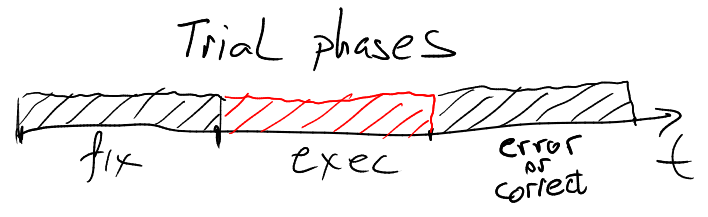

Test definition
A test represents the main concept in pyFlies language. Each test has a name, a condition table defining variables and their values for each trial, and component specifications with mapping to trials.
On this page we will use an example to show how tests are defined and we will provide references to other pages describing each segment of the definition in more details.
Here is an example of a test:

The example represents the definition of the Eriksen Flanker task published in:
Eriksen, B. A.; Eriksen, C. W. (1974). "Effects of noise letters upon
identification of a target letter in a non- search task". Perception and
Psychophysics. 16: 143–149.
The target is flanked by non-target stimuli which correspond either to the same directional response as the target (congruent flankers), or to the opposite response (incongruent flankers). In this example we are using arrows which points to the left or to the right. The surrounding non-target stimuli will be congruent (point to the same direction), or incongruent (point to the opposite direction).
Before the test we have three variables defined which we shall use in the test:
directions - a list of directions, congruencies - a list of congruencies as
each trial can be either congruent or inconguruent, and repeats - a number of
repeats we shall use to change the total number of trials during the test run.
Test table expansion
Values of each trial variable is given as an expression in the table first
non-header row. You can see that each expression is a loop expression which
will loop over the given sequence to expand the table. Loops are evaluated from
left to right, leftmost loop being the top-level outer loop while the rightmost
loop being the inner loop. We could also have a sequence without the loop, in
which case the sequence would cycle, or any other expression involving global
and trail variables and literal values.
For repeats value of 1, as defined globally, this table expands as follow:

We could as well write condition table in the expanded style but it would be
less flexible as it would be harder to add new variables, to use repetition
for total number of trials etc. For the details of condition table specification
and expansion see Condition Tables section.
Tip
Although, pyFlies specifications are just plain textual files and can be edited in any text editor, it is much more convenient to edit tables in editor that supports them, like VS Code pyFlies extension.
Components specification
The second part of the test definition are mappings of components to trials. These mappings define the components (stimuli and inputs), their timings and conditions under which they should be shown to the subject.
These mappings are given in the form:
<condition> -> <list of components with timings>
where left-hand side (LHS) <condition> is boolean expression which when
evaluated to true in the context of the current trial means that the
components on the right side are used in the trial.
Trial phases
For better organization, each trial execution is separated in three phases:
fix, exec and error/correct. The phases are executed in succession and for
each execution builtin boolean variables fix, exec, error, correct get
value of true for corresponding phase, thus those variables can be used in LHS
expressions to match the phase.

In the above example we have fix -> cross... LHS condition is just fix
variable which will be true during fix phase of each trial. Thus, cross
component will be shown to the subject during each fix phase. If we wanted,
for example, to show cross only for odd trials we could write:
fix and parity == odd -> cross() for 1000
Notice the part of the definition for 1000. Each component can optionally
define its duration in miliseconds. Here we specify that the cross component
will be shown for 1s. If duration is not provided it means indefinitely and the
component will last until the end of the phase. We usually use indefinite
durations when we have input components which terminate phases on user input.
Tip
Expressions are used almost everywhere and they can range from just a simple literal value to a more complex expressions using local and global variables.
In the exec phase we have two components image and keyboard. First
component will display the given image, and the second will wait for the user
input. The image component has file defined as variable string created by
interpolating direction and category values from the current trial. All
strings support powerful templating provided by the Jinja template
engine.
keyboard component has two parameters: valid - a list of valid keys, and
correct - what is considered a correct response. Notice that we have defined
valid keys and correct response in abstract terms representing directions.
pyFlies tries to capture the essence of the test and thus parameters and
variables are defined in abstract terms. The detailed mapping is provided by the
code generator and the default mappings can be overriden by the target
configuration
At the end we specify what will happen in correct and error phases of the
trial. We choose to show green or red circle but we could also choose to play
sounds, or we could leave these phases out if we don't want it. Remember that
correct and error are just boolean variables that are true during phase
calculation.
Each trial must have components defined for at least exec phase (i.e.
evaluation for exec == true must yield components to show). If that is not
satisfied the error will be reported during compilation.